A visual journal
Photography
Small moments, open horizons. A collection of things that made me pause.
Browse the archiveSelected frames


The archive
Arranged by year, then by the camera behind each frame.
Drag to explore, or choose a year below.
Device
Every camera, across all years.
2024
16 photographs
Sony a7C II
Light winding through red stone
2024 Sony a7C II
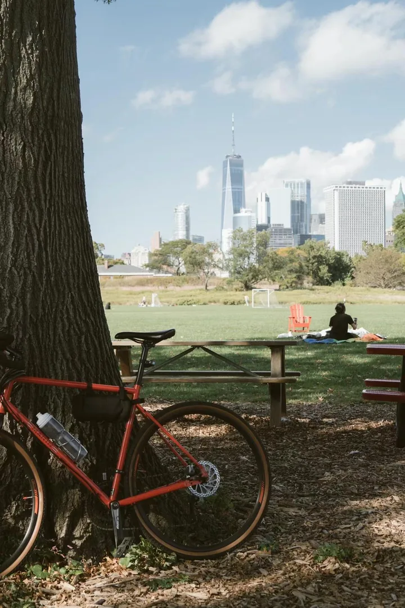
A bicycle rests beneath the trees
2024 Sony a7C II
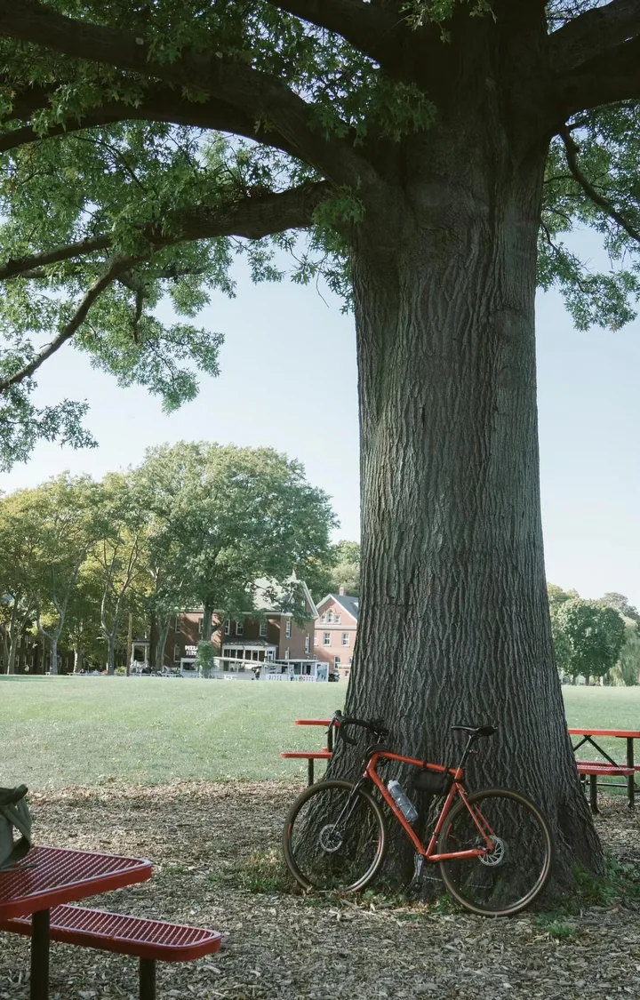
A red bicycle in deep shade
2024 Sony a7C II
A river threading through the canyon
2024 Sony a7C II
Sunlight filtering between slender trunks
2024 Sony a7C II
Blue ridges fading into the distance
2024 Sony a7C II
A photographer above the mountain valley
2024 Sony a7C II
Sunset spreads above the waterfront
2024 Sony a7C II
Clouds gather above fields and mountains
2024 Sony a7C II
White clouds meet green fields
2024 Sony a7C II
Snow peaks rising above a small roof
2024 Sony a7C II
Pink light brushes the snowy peaks
2024 Sony a7C II
A village tucked between mountain slopes
2024 Sony a7C II
A golden moon above the rooftops
2024 Sony a7C IIFilm · Nikon FE2

2023
9 photographs
Sony a6400

A low sun beneath a pink sky
2023 Sony a6400
Figures wading along the quiet shore
2023 Sony a6400
White pigeons against a pink sky
2023 Sony a6400
Red roses at the water’s edge
2023 Sony a6400
A small dog with a bright ball
2023 Sony a6400
Clouds mirrored beside the reeds
2023 Sony a6400
A raised hand beneath green leaves
2023 Sony a6400
Light breaks around a dark cloud
2023 Sony a6400
A bright aisle through crowded stands
2023 Sony a64002022
9 photographs
Sony a6400

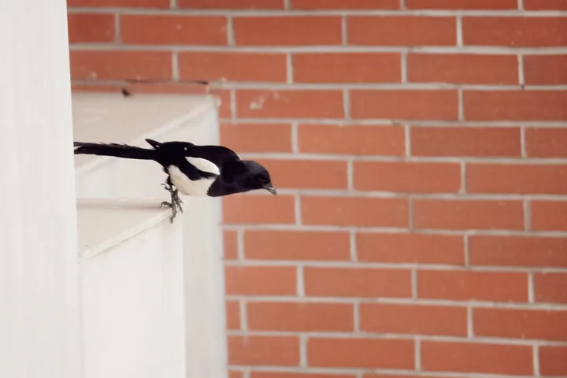
A bird passing the brick wall
Apr 29, 2022 Sony a6400
White blossoms catching the sunlight
Apr 18, 2022 Sony a6400
Pink tulips across a green garden
Apr 18, 2022 Sony a6400
Full moon between dark branches
Apr 14, 2022 Sony a6400
A pavilion beneath the evening glow
Mar 20, 2022 Sony a6400
A white feather against vivid red
Jan 13, 2022 Sony a6400
A bird crosses the orange sun
2022 Sony a6400Film · Leica

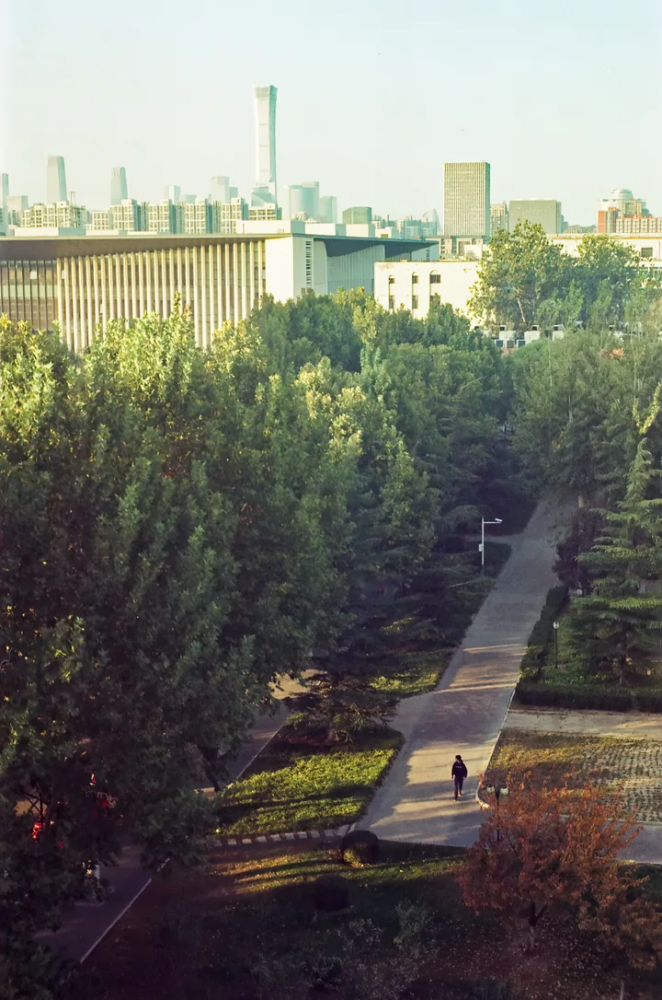
A walker on a sunlit path
2022 Film · LeicaFilm · Rollei 35 SE

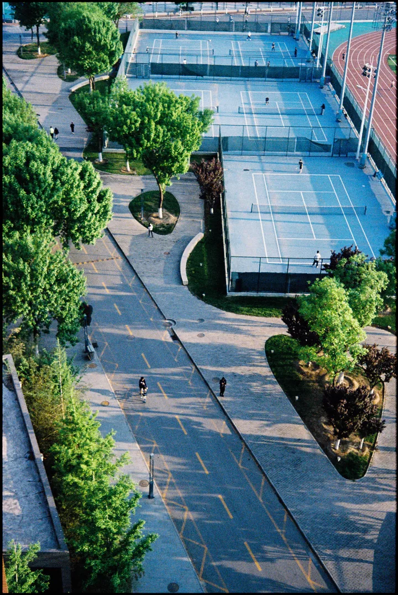
Blue courts framed by leafy paths
2022 Film · Rollei 35 SE2021
11 photographs
Sony a6400

Purple clouds over the city
Sep 16, 2021 Sony a6400
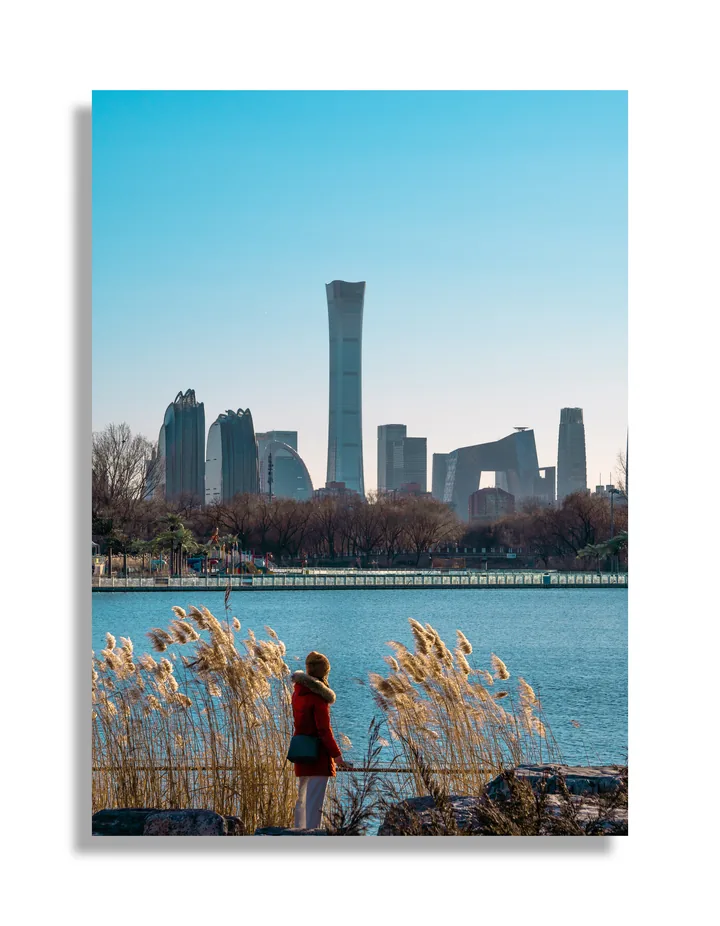
Reeds along the city’s edge
2021 Sony a6400
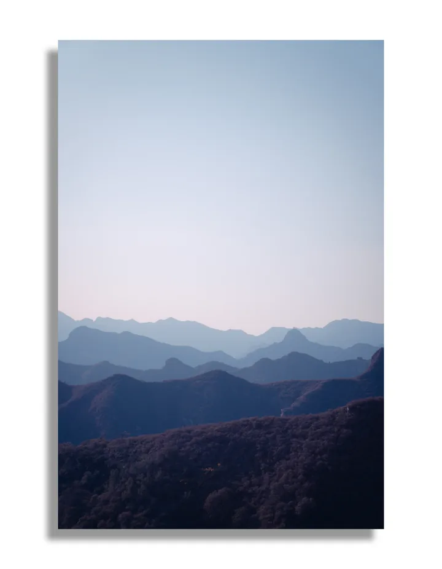
Mountain ridges dissolve into blue
2021 Sony a6400
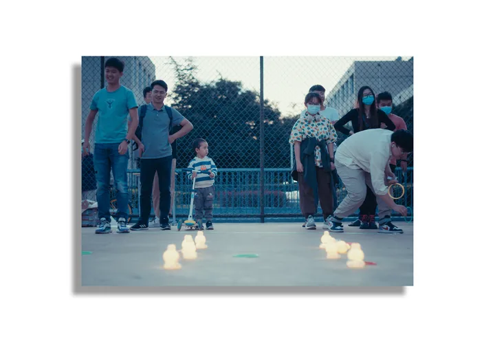
Skaters weave between small cones
2021 Sony a6400
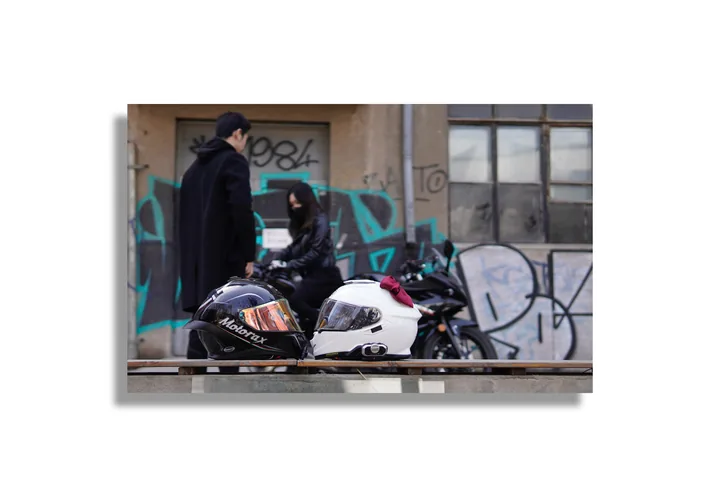
Motorcycles parked beside a painted wall
2021 Sony a6400
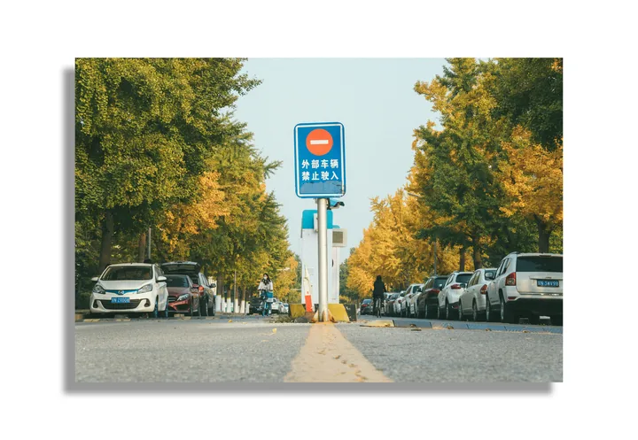
A street lined with golden trees
2021 Sony a6400
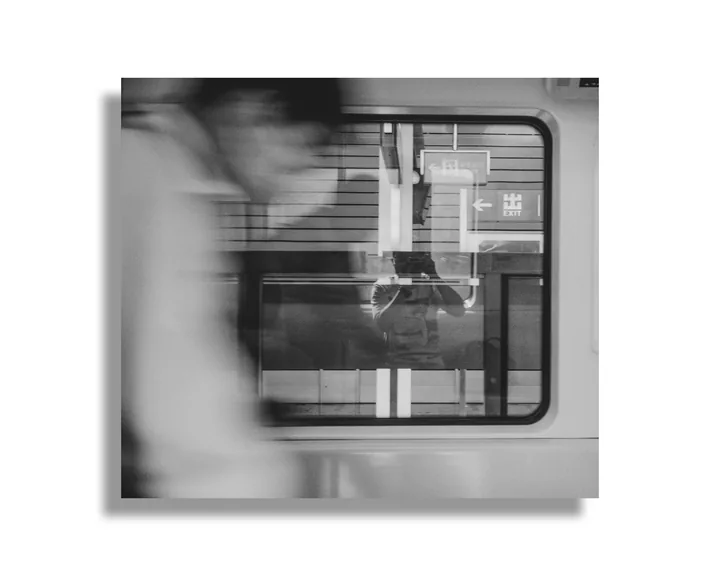
A blurred figure beyond the train window
2021 Sony a6400
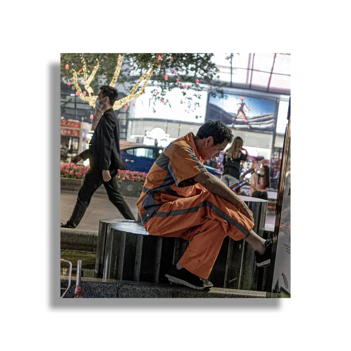
A seated figure beside the stall
2021 Sony a6400
Clothing and faces fill the shop
2021 Sony a6400
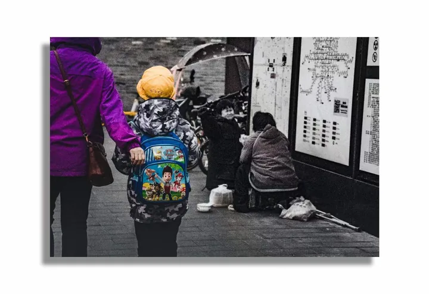
Two figures along a narrow lane
2021 Sony a6400Film

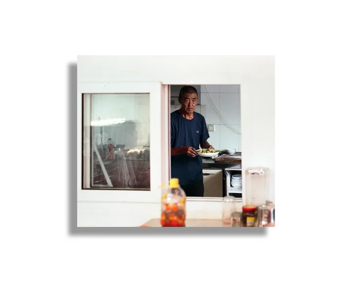
A meal at the kitchen window
2021 FilmNo photographs match these filters.